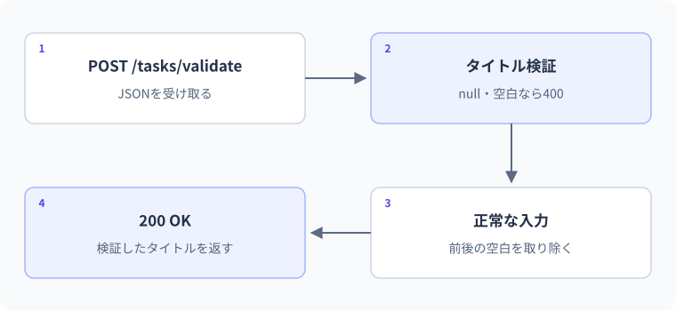

30 入力検証とHTTPステータス — 詳細解説
入力検証とHTTP応答。
APIへ送った入力が不正だったとき、エラーを返すだけでなく、保存データも変えないことが重要です。受け取り、正規化、検証、更新、応答の順序を確認します。
成功・入力不正・対象なしを契約として区別する
APIは呼び出す側へ結果を機械的に伝える必要があります。全て200で返して本文の文字列だけを読ませると、共通の通信処理や監視が成功と失敗を判断しにくくなります。HTTPステータスと応答本文の役割を分け、入力と結果の契約を定義します。
入力検証は少なくとも三段階あります。HTTP本文として読めるか、C#の型へ変換できるか、業務ルールを満たすかです。stringへ変換できても空白の商品名は不適切かもしれません。nullable参照型はコンパイル時の解析を助けますが、外部データの全ての規則を自動で保証するものではありません。
| 状態 | 代表的な応答 | 呼び出し側の行動 |
|---|---|---|
| 取得・更新が成功し本文あり | 200 | 本文を読む |
| 新規作成 | 201とLocation | 作成先のURLを把握 |
| 成功し本文なし | 204 | JSON本文を読もうとしない |
| 要求が不正 | 400 | 入力や形式を直す |
| 対象なし | 404 | IDや存在を確認 |
| 現在の状態との競合 | 409 | 最新状態を確認し再判断 |
| 予期しないサーバー側失敗 | 500 | 詳細を隠し、記録と調査 |
最小例：保存前に検証する
var builder = WebApplication.CreateBuilder(args);
var app = builder.Build();
app.MapPost("/validate-title", (TitleInput input) =>
{
if (string.IsNullOrWhiteSpace(input.Title))
{
return Results.ValidationProblem(new Dictionary<string, string[]>
{
["title"] = new[] { "タイトルを入力してください。" }
});
}
string title = input.Title.Trim();
if (title.Length > 100)
{
return Results.ValidationProblem(new Dictionary<string, string[]>
{
["title"] = new[] { "タイトルは100以内で入力してください。" }
});
}
return Results.Ok(new { title });
});
app.Run();
public sealed class TitleInput
{
public string? Title { get; set; }
}この例の100はstring.Lengthの数え方に基づく上限です。見た目の文字数とは必ずしも一致しません。入力の制約を「100文字」と説明する場合、何を数える仕様なのかも合わせます。
{"title":" Study "}なら200と{"title":"Study"}、{"title":" "}なら400の検証エラーが期待されます。Dictionary<string,string[]>は、項目名ごとに複数のエラーメッセージを持たせています。Results.ValidationProblemは、エラー項目を含む構造化された応答を作る補助です。
DTOの入力と出力を分ける
保存モデルをそのまま入力DTOとして受け取ると、IDや管理用の状態まで外部から設定できてしまう設計になりがちです。作成入力にはTitleだけ、出力にはサーバーが決めたIDと状態を含めるなど、境界を分けます。
- 1POST本文
titleだけを受け取る
- 2入力DTO
string? Titleとして欠落・nullも判断可能
- 3検証
空白・長さ・業務条件
- 4保存処理
サーバー側でIDと初期状態を決める
- 5出力DTO
id・title・doneを返す
DTOを分けるだけで認証や権限管理が完成するわけではありません。誰がそのデータを作成・取得・変更してよいかという認可は、別の規則です。ここでは自分の端末だけで試す学習用APIを扱います。
実用例：作成・取得・削除とメモリ状態
次は独立した完全なWebサンプルです。保存先はメモリなので再起動でデータが消えます。変更と読み取りには同じロックを使い、共有Dictionaryへ同時にアクセスする範囲を守ります。
var builder = WebApplication.CreateBuilder(args);
var app = builder.Build();
var store = new TodoStore();
app.MapPost("/todos", (CreateTodo input) =>
{
if (string.IsNullOrWhiteSpace(input.Title))
return Results.BadRequest(new { error = "タイトルは必須です" });
string title = input.Title.Trim();
if (title.Length > 100)
return Results.BadRequest(new { error = "タイトルが長すぎます" });
Todo item = store.Add(title);
return Results.Created($"/todos/{item.Id}", item);
});
app.MapGet("/todos/{id:int}", (int id) =>
{
Todo? item = store.Find(id);
return item is null ? Results.NotFound() : Results.Ok(item);
});
app.MapDelete("/todos/{id:int}", (int id) =>
store.Remove(id) ? Results.NoContent() : Results.NotFound());
app.Run();
public record CreateTodo(string? Title);
public record Todo(int Id, string Title, bool Done);
public sealed class TodoStore
{
private readonly object _gate = new();
private readonly Dictionary<int, Todo> _items = new();
private int _nextId;
public Todo Add(string title)
{
lock (_gate)
{
int id = checked(_nextId + 1);
var item = new Todo(id, title, false);
_items.Add(id, item);
_nextId = id;
return item;
}
}
public Todo? Find(int id)
{
lock (_gate)
{
return _items.TryGetValue(id, out Todo? item) ? item : null;
}
}
public bool Remove(int id)
{
lock (_gate)
{
return _items.Remove(id);
}
}
}ここではResultsの各補助が返すIResultを用いるため、複数の応答型の分岐を統一して返せます。TypedResultsを使う場合は、具体的な型が異なるので、戻り値の型をResults<T1,T2>などで表す設計もあります。表面の名前だけ入れ替えず、戻り値型を確認します。
lockは、同じ_gateを使う区間に同時に複数の実行の流れが入らないようにします。この例のロック内は短いメモリ操作だけです。ロック内でawaitは使えず、時間のかかる通信やファイル処理も置かないようにします。複数プロセスや複数台のサーバー間を守るロックではありません。
リクエスト前後の状態を追う
| 操作 | 応答の期待 | 保存状態 |
|---|---|---|
| 起動直後 | まだ要求なし | 空、次ID=1 |
| POST title=Study | 201、Location:/todos/1 | ID1を追加、Done=false |
| GET /todos/1 | 200、ID1の本文 | 変化なし |
| POST title=空白 | 400 | IDを消費せず変化なし |
| DELETE /todos/1 | 204、本文なし | ID1を削除 |
| GET /todos/1 | 404 | 変化なし |
実務で外から利用する保存部品なら、TodoStore側にも業務制約を持たせる設計を検討します。この段階はAPI入力と保存順序を見える形にするための教材です。第27レッスンで扱った「複数の入口から呼ばれるとき、どこが最終的に制約を守るか」を思い出してください。
本文の実例との対応：入力検証とHTTP応答
次の図は本文の実例「タイトルを検証するAPI」を使った補助例です。この節のコードとは変数や入力値が異なるため、処理の対応に注目します。

一つの項目を作成し、取得し、削除する順序を概念的に示します。
| 処理 / 時間 → | 作成前 | 作成後 | 取得後 | 削除後 |
|---|---|---|---|---|
| 保存状態 | 対象なし | 新しい対象がある | 対象は残る | 対象なし |
| 要求と応答 | 準備 | POST → 201 | GET → 200 | DELETE → 204 |
| その後の確認 | — | Locationなどで参照する | 内容が一致する | 同じGET → 404 |
作成成功を返したのに直後の取得で見つからないなら、契約が成立していません。削除後の取得も確認し、応答コードだけでなく状態の変化まで調べます。
境界・比較例：未入力と長さの検証
必須条件と100文字以内という長さの条件を分けています。この例のLengthはUTF-16のコード単位数であり、見た目の文字数とは一致しない場合があります。
foreach (string? title in new string?[] { null, " ", "Review", new string('A', 101) })
{
string? normalized = title?.Trim();
bool valid = !string.IsNullOrEmpty(normalized) && normalized.Length <= 100;
Console.WriteLine(valid);
}想定出力
False
False
True
False間違い：Countから次のIDを作る
int id = items.Count + 1;では、途中の項目を削除すると、既存IDと重複する可能性があります。例えばID1とID2があり、ID1を消すと件数は1なので、次に2を作ろうとして既存ID2と衝突します。件数はIDの最大値でも採番履歴でもありません。
修正は単調に増やす採番値を管理する、データベースの採番を使うなど、IDの責務を別に持つことです。上の例は_nextIdをロック内で増やしています。メモリ再起動後の連続性や複数台での一意性まで保証するものではないため、本番のID設計へそのまま使いません。
IDが1、2、3の一覧からID=2を削除した例です。件数は減りますが、最大のIDが同じように減るとは限りません。
| 操作 | 残るID | Count | Count + 1 |
|---|---|---|---|
| 最初 | 1, 2, 3 | 3 | 4 |
| ID=2を削除 | 1, 3 | 2 | 3：すでに存在 |
Countは今ある要素の個数であって、次に使ってよい識別子ではありません。GUIDや永続化先の採番など、重複しない方針を設計します。
間違い：削除成功の204をJSONとして読む
204は本文がない成功です。クライアントが常にReadFromJsonAsyncを呼ぶと、空の本文の解析で失敗します。修正ではステータスを見て、204なら本文を読まず処理を終えます。HTTP上の成功と「必ず成功JSONがある」は別の約束です。
失敗の場合も、nullを返すだけで意図した404になると仮定せず、Results.NotFoundなど応答を明示します。サーバーとクライアントの両方で契約を表にして確認します。
削除成功を204 No Contentで返す契約を想定します。
応答が204か本文なしとして削除成功を扱う
そのステータスの契約に応じて本文を読む
成功したのに本文の解析でエラーになる場合は、サーバーの失敗とは限りません。クライアントの読み方が契約に合っているかを確認します。
.NET 10の検証機能との関係
.NET 10のMinimal APIには検証支援の機能があり、必要な登録と属性を使って検証処理を構成できます。一方、本文をDTOへ結び付けること、nullable注釈、業務ルールの検証は同じものではありません。以下の例では、ifによる手動検証で判定と応答を明示しています。
自動検証へ移すときも、空白、正規化後の長さ、保存状態との競合など、何をどの段階で検証するかを定義します。フレームワークが返す本文不正などの応答形式と、自分で返す検証応答を完全に揃えるには追加の設定が必要な場合があります。上のサンプルが全てのエラー本文を統一しているとは扱いません。
3段階の練習
基礎：空白タイトルのPOSTが400になり、直後の最初の正常POSTがID1になることを考えます。検証を採番・保存より前に置くことが解答の中心です。
標準：存在しないIDのGET・DELETEを確かめ、どちらも404になる契約を説明します。同じDELETEを二回送ると最初204、次404でも、削除済みという最終状態は変わりません。
応用：完了状態の更新を追加します。入力DTOはbool Doneだけを受け、ロック内で対象の有無を確認してrecordをwithで置き換えます。存在しなければ404、更新後は200と新しいDTOを返す設計にします。部分更新を使う場合でも、PATCH本文の具体的な形式は契約として定義してください。
公式資料
確認日：2026年9月14日。本文の理解を補うための資料です。学習対象は.NET 10 / C# 14です。パッチ番号は固定しません。